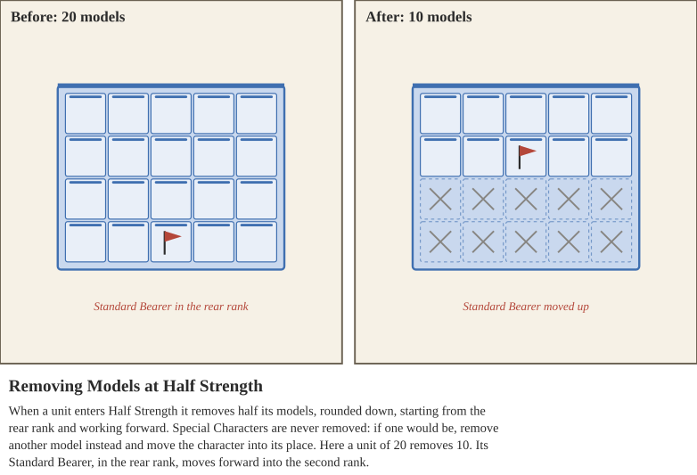

The Health of each unit is calculated during list building, by consulting the Unit Health Table below. Then, consulting the Health Penalty Table, determine the breakpoints for each Penalty Category, rounded down. For example, a unit with 25 Health has breakpoints at 25, 18, 12, 6, and 0, which correspond to the 5 Penalty categories on the Health Penalty Table.
When a unit suffers Damage, it subtracts that Damage from its Unit Health: after each Shooting attack is resolved, and in the Resolution Step for Melee. Remove the dice or tokens tracking the Damage, then check which Penalty Category the unit is now in, based on how much of its starting Health remains:
Full Strength (more than 75%): no penalty.
Weakened (75% or less): -1 Accuracy and -1 Strength. The unit gains a Break token when it enters this category.
Half Strength (50% or less): -1 Accuracy and -1 Strength. The unit removes half of its models, rounded down (see Removing Models from a Unit), and gains 2 Break tokens when it enters this category. It cannot Rally itself.
Mass Casualties (25% or less): -2 Accuracy and -2 Strength. The unit gains 2 Break tokens when it enters this category, and again at the start of every Activation Phase. It cannot Rally itself.
Eradicated (0% or less): remove the unit.
Track penalties with Accuracy and Strength Penalty tokens. Penalties are not cumulative: a unit does not gain them again each round, and when it enters a category with a greater penalty, it applies only the difference. If a single attack takes a unit through more than one category, it gains the Break tokens for every category it entered, and still removes half of its models for Half Strength even if it ends in Mass Casualties. Break tokens are resolved in the Morale Phase (see Breaking). Mercenary and Levy units cannot always be Rallied once they start to break; see Mercenaries, Levies, and Nobles.
| Unit Type | Health Points |
|---|---|
| Warrior | 1 per model |
| Cavalry | 1 per model |
| Chariot | 1 per Driver, Crewman, and Horse |
| Elephant | 6 per Elephant |
| Warmachine | 1 per Engineer |
| Health % | Category | Effect |
|---|---|---|
| Greater Than 75% | Full Strength | No penalty, prepare for battle! |
| 75% or less | Weakened | -1 Accuracy, -1 Strength. Gain a Break token when entering this category |
| 50% or less | Half Strength | -1 Accuracy, -1 Strength. Remove half (rounded down) of the models in this unit. Gain 2 Break tokens when entering this category. Cannot Rally itself. |
| 25% or less | Mass Casualties | -2 Accuracy, -2 Strength. Gain 2 Break tokens when entering this category, and again at the start of every Activation Phase. Cannot Rally itself. |
| 0% or less | Eradicated | Remove unit |
Units remove models at only two points: when they enter Half Strength, and when they are Eradicated. In between, a unit keeps fighting with the models it has, even as it continues to lose Health.
When a unit enters Half Strength, remove half of its models, rounded down, so that a unit never loses more than half of its models this way. Special Characters are never removed.
Closed Order units remove models from their rear rank first, working forward. If this leaves the rear rank incomplete, the unit keeps fighting with an incomplete rear rank. If a Special Character would be removed, remove another model instead and move the Special Character into its place.
Chariot units remove half of their chariots, along with their crews and horses, Elephant units remove half of their elephants, along with their crews, and Warmachine units remove half of their Engineers.
For Open Order units, the controlling player chooses which models to remove. If this leaves the unit out of Cohesion, it follows the normal rules for Open Order units not in Cohesion.
